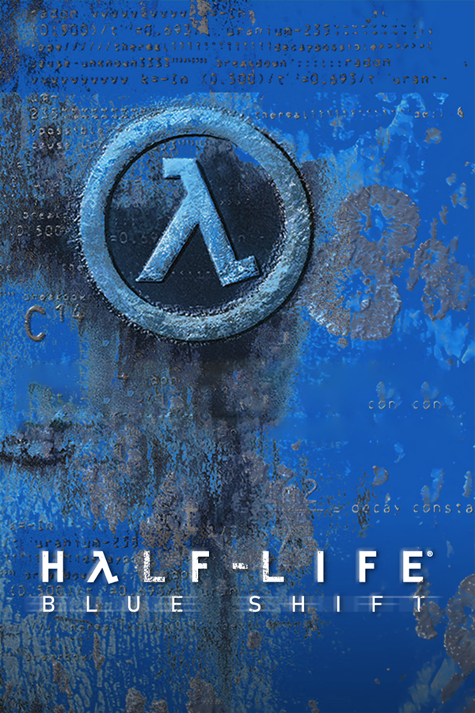

Half-Life: Blue Shift
Half-Life: Blue Shift
Detalles
 |
|
| Tiempo de juego | 22s |
| Última actividad | 4/12/2025 13:34:00 |
| Añadido | 23/9/2025 12:01:08 |
| Modificado | 10/12/2025 11:27:28 |
| Estado de finalización | Jugado |
| Librería | Playnite |
| Fuente | |
| Plataforma | PC (Windows) |
| Fecha de lanzamiento | 12/6/2001 |
| Puntuación de la Comunidad | 73 |
| Puntuación de la Crítica | 60 |
| Puntuación de usuario | |
| Género | Puzzle Shooter |
| Desarrollador | Gearbox Software |
| Editor | Sierra Studios Valve |
| Característica | Single Player |
| Enlaces | Steam 🌟Remake |
| Tag | |
Descripción
¿Alguna vez te preguntaste qué fue de Barney, el guardia de seguridad al que le debías una cerveza al principio de Half-Life? "Blue Shift" te lo cuenta. Esta expansión te saca del traje de científico y de las botas de marine para ponerte en el uniforme de un simple guardia de Black Mesa, un laburante que quedó atrapado en el peor día de la historia y solo quiere rajar de ahí.
Acá sos Barney Calhoun. Tu día arranca como cualquier otro, hasta que la resonancia en cascada hace mierda todo. Tu misión no es salvar el mundo ni limpiar el desastre; es mucho más simple y desesperada: sobrevivir. Tenés que abrirte paso por el caos, ayudar a un par de científicos a escapar y, con suerte, no terminar como la cena de un headcrab.
A diferencia de la locura de "Opposing Force", "Blue Shift" es una experiencia más contenida y fiel al juego original. No introduce un arsenal de armas nuevas ni razas alienígenas raras. Es puro Half-Life clásico, usando las herramientas que ya conocés para navegar por secciones nunca antes vistas del complejo de Black Mesa.
Un datazo de la época: esta expansión fue la que introdujo oficialmente el famoso "High Definition Pack", que le metía un lavado de cara a los modelos de las armas y los personajes (¡incluyendo a Gordon!). Ver el desastre desde la perspectiva de un tipo común, viendo a los soldados de la HECU como una amenaza en vez de tus compañeros, le da una vuelta de tuerca genial a la historia.
"Blue Shift" es un capítulo íntimo y fundamental en la saga de Black Mesa. Es una historia más personal y anclada a la tierra que las de sus hermanos, y te da una nueva apreciación por el quilombo que se armó en ese laboratorio. Una pieza de lore esencial para cualquier fanático que quiera conocer todos los ángulos de esta retorcida historia.